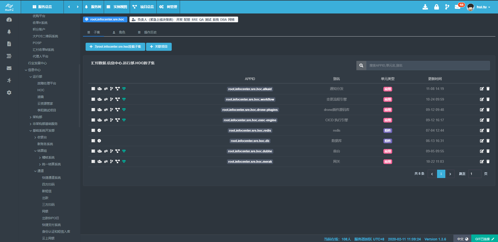

| 姓名 | 屠 晖 |
|---|---|
| 英文名 | Anakin |
| 性別 | 男性 |
| 生年月日 | 1984年11月02日 |
| 所在地 | 中国.上海 |
| 电话号码 | +86-18516517418 |
| anakintuhui@foxmail.com | |
| 最高学历 | 东华大学 本科 信息系统信息管理 |
| 婚姻状况 | 未婚 |
|---|---|
| 语言 | 第一语言 汉语
第二语言 英语 第三语言 日本語(基本会話) |
| 工作经历 | 2019年03月 ～
Huifu Payment |
技能
系统运维 项目管理 1年～3年 操作系统 MacOS 5年以上 Linux 5年以上 HP-UX 3年～5年 AIX 1年～3年 BSD 1年～3年 Solaris 1年未満 程序语言 JavaScript 5年以上 Vue.js 5年以上 React.js 1年～3年 Node.js 5年以上 Python 5年以上 Golang 3年以上 Bash 5年以上 PHP 3年～5年 TypesScript.js 1年～3年 Lua 1年～3年 Perl 1年未満 Swift 1年未満 网络 CCNP 数据库 MySQL 5年以上 Redis 5年以上 PostgreSQL 1年未満 MongoDB 1年～3年 Redis 5年以上 开源应用 Prometheus 5年以上 Jenkins 1年～3年 Nginx 5年以上 Gitlab 5年以上 Elasticsearch 1年～3年 Drone.io 1年～3年 Ansible 1年～3年 MATLAB 1年～3年 Loki 1年未満 Zabbix 1年～3年 移动端 iOS開発 1年未満 Android開発 1年未満 设计 PhotoShop 5年以上 Sketch 1年～3年
个人简介
注重细节，追求完美 深信工匠精神，全栈开发工程师。精通系统运维和软件开发,善于做架构产品化设计。对整体架构设计有很深刻的认识。一直在开发一线负责实际开发工作，精通多门开发语言，擅长新技术的研究和快速落地，具有较好的技术视野。虽然做为后端开发工程师，同时尤其擅长前端开发，追求极客精神。 职业经历概括则为:始于运维，鉴如磐石。精于数据，滴水穿石。后端为蓝，前端为青。
职业经历
【公司名】
 Huifu Payment （香港上市TO B第三方支付公司）
Huifu Payment （香港上市TO B第三方支付公司）
【在职时间】2019年3月〜至今
【岗位】高级运维开发工程师
【主要职责】组建并且带领8人团队落实公司数字化战略，任工具技术组Lead,开发Devops平台，主要建设成果包括
1.Service Tree体系的建立，梳理公司上千个系统应用之间的关系,使其有效结合,对整个体系进行数据建模.打通CMDB,监控，运营业务之间的数据鸿沟。
2.CI/CD 流水线系统开发，基于Docker和K8s原生，同时支持传统发布模型的CI/CD系统。
3.变更管理系统开发, 记录和追踪生产变更流程,能对标准和非标变更系统进行流程化管理,提高变更效率和减少上线的故障率。
4.配置中心系统开发,结合服务树体系和变更管理系统,可以记录各个环境种的配置变更,具有环境复制，快速回滚，历史配置查询的功能。
5.效能BI, 通过数字化手段计算分析不同部门，团队，个人的效能，形成数据可视化。
6.架构系统的中台门户开发，使用到微前端技术，整合公司云平台，CI/CD系统，变更管理系统，压力测试系统，监控系统，事件分发系统，API管理系统，低代码后端流程构建系统，低代码前端构建系统等 ，构建统一门户。
7.轻量级日志系统开发，全面代替阿里云日志系统，并且可以支持开发人员90%的需求，使得整体运维成本下降90%
8.开发基础监控系统，基于Prometheus监控，开发web使得配置可下放给开发人员，推进公司全栈开发理念。
9.参与智能监控系统的开发，通过Prometheus和算法模型，实现部分异常智能感知。
10.参与全链路监控的开发，负责全链路监控可视化
11.负责汇付技术白皮书Devops部分的撰写
【公司名】
 BILIBILI.COM
BILIBILI.COM
【在职时间】2018年2月〜2019年2月
【岗位】SRE工程师
【主要职责】
负责Bilibili的监控平台的设计开发以及承担监控平台的运维工作，负责带领3人的开发team开发监控平台。
技术栈通过引入Prometheus，替代老旧的Zabbix系统，更好的适应云原生的监控需求。
通过开发监控平台的可视化开发和配置能力下放，推动整个开发部门的全栈运维能力。
【公司名】上交所技术责任有限公司
【在职时间】2016年12月〜2018年1月
【岗位】高级运维架构师
【主要职责】
1 开发上海证券交易所 核心竞价交易系统和业务系统，金融云项目的运维系统，任开发经理，产品经理和主要开发人员，设计整套基于互联网技术的新架构。
2 开发Python 实时计算系统框架，監測交易網關，交易分發系統，交易批處理系統，上游競價系統的監測實時計算，主程。搭建並維護使用mesos 的docker容器平台，監控應用和使用paas平台等。
3 维护并搭建Opentsdb时序数据库，运维和接口开发前端Vue.js ，websocket，开发了纳斯达克风格的前端组件库，主程。
4 基于elastic 日志处理分析系统，集群搭建和维护上交所Nodejs Api 网关设计和开发，主程。
5 从底层完全重构之前基于厂商的交易监控系统。5人开发团队，完成监控项目一期建设。对open falcon 做了二次开发，读过源码，采用其中几个部件开构建基础监控系统。
6 负责规划下一代核心交易系统监测部分。
7 撰写上交所新一代运营监测系统产品白皮书。
【公司名】
 JD.COM 北京京东尚科科技股份有限公司上海分公司
JD.COM 北京京东尚科科技股份有限公司上海分公司
【在职时间】2015年4月〜2016)年10月
【岗位】高级运维架构师
【主要职责】
1.管理和运维超过10w核大型服务器集群。日常应用发布和管理。
2.负责京东无线业务运维开发部的Elasticsearch集群维护，为其他Team提供支撑。
3.负责京东无线APM系统的开发，进行数据可视化输出，负责架构设计，后端框架开发，前端框架开发,UI设计
4.分布式外网线路探测开发，实现妙级的端到端全国网络抖动告警，线路检测，发现骨干网络故障能立即切到HttpsDNS ,来进行容灾。负责架构设计，后端框架开发，前端框架开发,UI设计。
【公司名】
 UCLOUD.CN 云计算
UCLOUD.CN 云计算
【在职时间】2013年11月〜2015年4月
【岗位】高级软件工程师
【主要职责】
1.从0到1开发CRM客户管理系统，并且结合计费系统和自己开发的BI系统为销售，运营，市场提供数据支持，任架构师，产品，主程。
2.从0到1开发Ucloud数据分析系统，经过三次大版本迭代将原有的Pandas单一的脚本化改为可以实现即席查询，定时报表输出，图形化数据展示的综合BI系统。为Ucloud商业运营提供数据支持。任架构师，产品，主程。
3.配合第三方审计和财务，对公司的业绩进行每日的环比和同比计算，发送图形化报表和CEO,COO,销售业绩提成，收入预测等
3.开发公网链路探测系统。任架构师，产品，主程。
4.开发云日志产品，基于ELK，借鉴了国外竞品进行产品化开发，并且被收录到开源中国,项目地址https://www.oschina.net/p/sevnote(已经停止维护),可以对多租户用户进行日志隔离和切割，并且进行实施查询搜索，并且可以进行数据可视化输出。任架构师，产品，前端主程和部分后端开发。
5.开发CMDB系统，基于基础硬件架构的CMDB开发。任前端和后台数据库设计,UI设计。
6.为公司其他团队提供统一的Nodejs Web框架以及前端系统，有效改善后台管理系统的视觉效果。基于Express在Nodejs初期为PHP工程师转型提供有力支持，借鉴了PHP CI框架，可以让开发无缝切换。
7.二线技术专家组的外部系统运维支持类工作。
8.硬件服务器的性能测试，全自动装机系统的实现。
【公司名】上海亿通国际股份有限公司
【在职时间】2010年03月〜2013年11月
【岗位】系统工程师
【主要职责】公司属于海关电子口岸，负责上海港的货物进出口航运数据，主要工作是维护unix主机，包括AIX,HP-UX,刀片等，维护JAVA中间件Weblogic，报文分发组件，使用PHP开发自动发布系统，负责网站web运维，开发运维管理系统，优化配置nginx，zabbix监控
项目经验
【项目名】Huifu Log System
【职责】架构师，产品，主程
【内容】轻量化的日志系统用于代替阿里云的日志系统，节省90%成本和实现90%开发使用场景覆盖，同时覆盖混合云架构
【部分项目快照】
【项目名】Huifu Platform
【职责】架构师，产品，主程
【内容】使用微前端构建Huifu 架构中台门户系统，接入所有中台和工具类应用，极大提升工具使用效率
【部分项目快照】
【项目名】Huifu Operation Center
【职责】架构师，产品，主程
【内容】负责Huifu Operation Center系统从0到1的开发，打通开发，测试，运维，极大提升整体效能。无论是测试结果,CI/CD流程，上线发布，故障响应，监控做到一站式接入。
【部分项目快照】
系统总览
仪表盘
LDAP

服务树

迭代(项目)视图

生产变更流程引擎

CI/CD流水线

实时CI/CD运行结果显示
CI/CD 类配置

迭代(项目)跑多流水线
变更管理
上线变更日历

配置中心
【项目名】Bilibili监控平台
【职责】架构师，主要开发人员
【内容】 负责Bilibili监控平台的整体架构设计，基于Prometheus，使用PromQL亲自编写了各种监控算法的规则，并且让Prometheus支持集群化方案和冷热存储分离，实现超过1亿的Series存储和超过2W个Metric指标的采集，通过通用的表达式来让研发可以自主配置不通的阀值。
【部分项目快照】
实时日志Websocket Dashboard（带实时弹幕系统，用于排查Case的协作)

事件中心
【项目名】 上交所创新量化交易系统
【职责】架构师，主要开发人员
【内容】通过网络爬虫采集财经数据，A股，美股，港股的股市数据和财务数据。进行不同时间时间纬度的K线数据计算，可以计算出MACD,KDJ等指标交叉数据和值，判断股市走势。使用Python通过成交量，高低支撑价位来计算出同种形态的个股进行消息推送。开发了IOS原生应用查看个股的K线，量化计算结果。可以进行近高频的实时交易。
【项目名】上交所监控平台
【职责】架构师，主要开发人员
【内容】 负责整个上海证券交易所交易系统的监测闭环，SRE落地前序，从0到1的完全自研，涵盖核心交易系统，周边业务系统和大数据系统。处理海量数据的实时监控体系。使用Python 加内存数据库实现实时分析竞价数据，通过Kafka作数据接收队列。处理延迟在30ms以内。整个监测系统的响应时间控制秒级。设计了整个项目架构并且参与编写网关框架代码。Python 实时计算处理引擎。Metric 告警规则引擎。规划并且设计基于交易所环境的CMDB，和立体化的监控体系。
【部分项目快照】
运维人员的系统实时看板
系统容量监测
使用Vue重构的Grafana

重构的Grafana自定义Metric指标
单体服务器预览结合CMDB
批处理系统实时数据监控
交易网关系统监控

BMS系统监测

【项目名】上交所金融云平台
【职责】架构师
【内容】负责上交所基于容器云平台的运维开发。基于Mesos、Marathon调度框架搭建了容器云原型。后期转为k8s，并且开发了Dockerfile自动打包系统。NGINX 在线配置管理系统。主导和设计了上市公司互联网业务和证监会环网的对称网络互访。搭建了基于openrsty的灰度系统。对整个mesos的docker 环境进行监控和采样系统的开发，实用nodejs 开发了pump数据泵，能在异构隔离系统之间互相抽取数据，实现ETL
【项目名】京东网络探测平台
【职责】架构师,主程
【内容】全网链路质量探测，能够精确的反应当前网络质量，做到故障自动化切换。通过异步的icmp协议,以及tcp协议根据特定得算法，求得全国探测质量最高的探基准点。整个项目基于NodeJS 的高并发和异步特性，能秒级探测全国数量众多的探测点。
【项目名】京东无线APM平台
【职责】产品经理，架构师
【内容】京东无线端到端的性能分析。基于elasticsearch，日数据处理量达到5亿条,对用户上报的性能数据进行DSL查询得出结果,获得真实的用户体验数据。
【项目名】Ucloud 运营数据平台
【职责】产品经理，架构师,主程
【内容】负责Ucloud 数据平台开发，使用Hadoop和Elasticsearch搭建离线数据分析处理平台，计算各类财务数据报表，运营数据分析。
【项目名】Sevnote日志分析系统
【职责】产品经理，架构师,主程
【内容】系统笔记 Sevnote 是使用 NodeJS 开发的基于 Elasticsearch 的海量日志分析系统，能通过主机，设备，程序，优先级，关键字来过滤系统日志，更有动态仪表盘能实时的监控日志的产生。支持 Syslog 协议，如果安装Sevnote-agent 可以收集任何文本形式的日志，例如，Web 访问日志，应用程序产生的日志进行集中的管理。如果把监控形容为把脉，那么通过检索日志就是对系统健康的验血(开源产品，详见https://www.oschina.net/p/sevnote)。
教育经历
2006-2010 东华大学 信息系统信息管理 本科